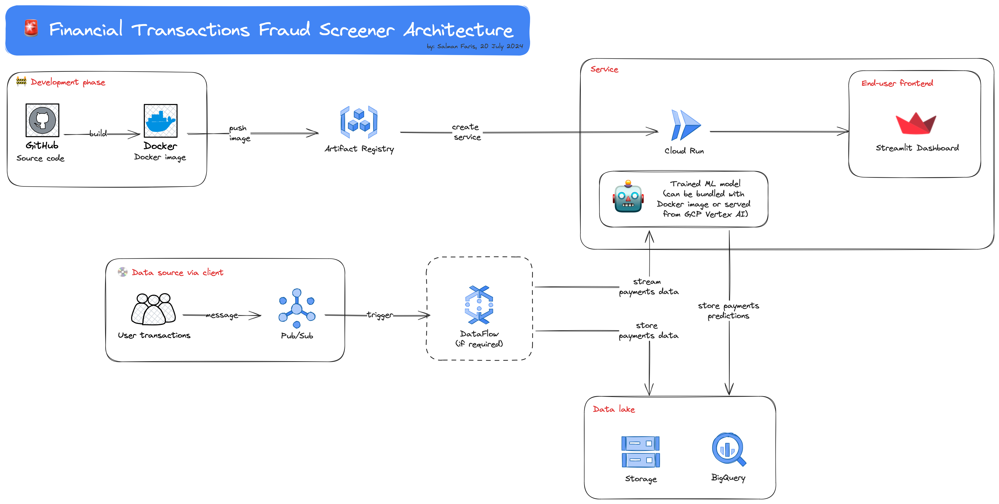
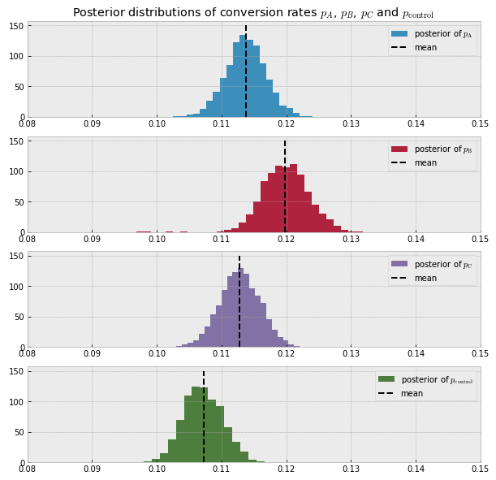
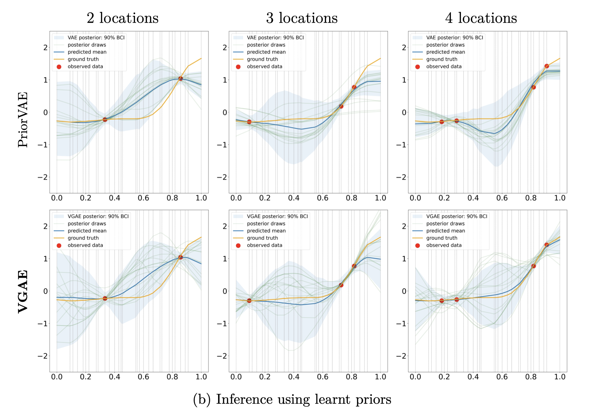
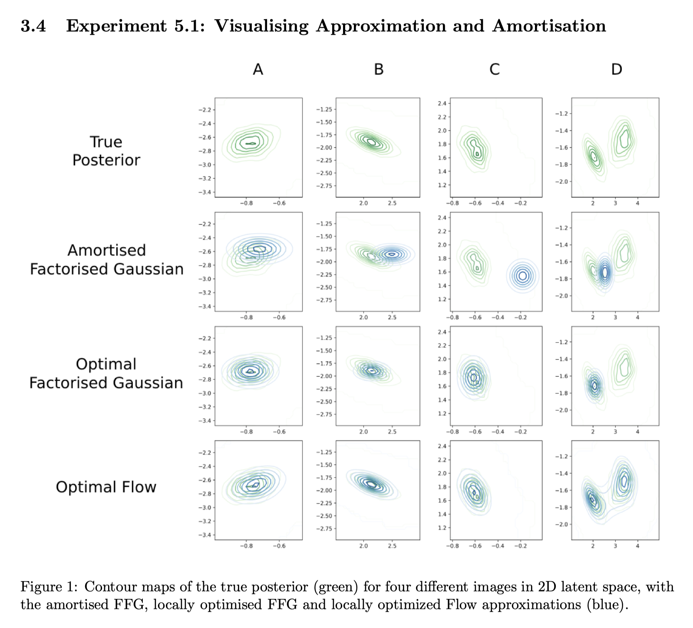
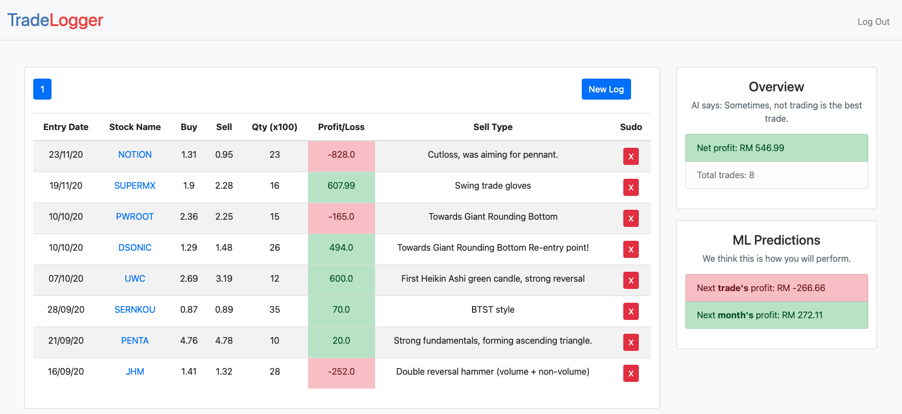
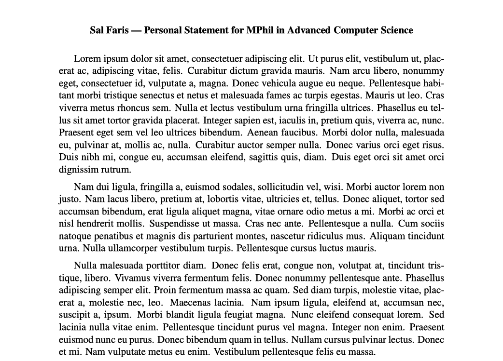

🔍 data science
Financial transactions fraud detection using machine learning
This project covers strategy research, experimentation (with reporting) and deployment via Google Cloud.

Researched and verified the class weight strategy in “Fraud Detection using Machine Learning” (Oza, 2018); and further extended the paper’s analysis with new models and metrics. I wrote a full experiment report on this strategy verification which can be found here: Replication & extension of “Fraud Detection using Machine Learning” (Oza, 2018).
Trained logistic regression, SVMs and decision trees to perform financial transactions fraud detection in an imbalanced dataset of 6+ million rows and 0.1% sample fraud transactions (Python, scikit-learn).
Built a web app to visualise streaming transactions data and perform live fraud detection using trained models. (Python, Streamlit, Docker, Google Artifact Registry, Google Cloud Run, Google Cloud Pub/Sub, Google Vertex AI).
Measuring the impact of a website redesign the Bayesian way
Problem statement: How can we determine if the change in observed conversion rates after website redesign is not due to random chance? Moreover, can we get an exact probability of how likely a test group is to perform better/worse than the control group?

In this mini project, I analysed the conversion rates of four different user groups (one of which is the control group) using pivot tables and bar plots to get a first big picture.
Then, using PyMC3, I applied Bayesian A/B testing based on a Metropolis sampler to measure which group is most likely to have a higher conversion rate than the control group. The Bayesian way yields a solid probability unlike the frequentist approach. For example, in this project, I was able to deduce that “there is a 99% probability that user group B has a higher conversion rate than the control group”.
This exact probability gives us the confidence required to make important business decisions. In this case, we can be really confident in our decision of switching to the design version exposed to group B since there is only a 1% chance of B being worse than the control. This is one of the many awesome reasons why I favor the Bayesian approach for data tasks; this also helps us answer the second problem.
This project is hosted on DataCamp Workspace.
Regression analysis on TfL Santander cycles
Problem statement: To what extent can we use a lightweight, explainable model to predict cycle hires with lowest RMSE?
The idea of the project is to understand trends in the usage of TfL Santander Cycles (aka Boris bikes) and then predict cycle hires using linear models which are scalable and lightweight. In this project, I have
Investigated suitability of fitting a linear model by checking existence of trends in the residuals vs fitted plot.
Verified normality of cycle hires after Yeo-Johnson normalisation using a density, histogram and QQ plot.
Applied feature engineering methods such as forward search model selection, one-hot encoding, moving average, and Yeo-Johnson normalisation.
Implemented a linear model with 99% lower RMSE (935.5 to 3.5) and 155% higher R 2 score (0.27 to 0.69) relative to the baseline naive linear model.
This project was hosted on Deepnote and then hosted on DataCamp Workspace.
🔬 research ML
MSc thesis. “Enhancing VAE-learning on spatial priors using GCN”
My Oxford MSc thesis supervised by Seth Flaxman, Swapnil Mishra and Elizaveta Semenova.

I made the observation that the PriorVAE framework in “PriorVAE: encoding spatial priors with variational autoencoders for small-area estimation” (Semenova et. al, 2022) does not make efficient use of the data’s local neighbourhood structure when learning spatial priors for MCMC sampling.
So I proposed a new framework, called PriorVGAE, which exploits the underlying local neighbourhood structure and propagates this information efficiently via the use of graph convolutional networks (GCN). Under this new framework, we were able to perform MCMC inference with far superior performance as compared to PriorVAE while enjoying better sampling speeds. We achieved lower mean squared error (MSE) for our sample reconstructions across all our experiments and attained higher effective sample sizes with lower MCMC sampling time.
The breakthrough. Naively injecting a GCN into a VAE framework would not make the architecture work. The key observation was to realize that spatial priors inherently admits global information. To this end, I introduced a local-to-global scheme that consolidates all the local information into a global representation, relying on the universal approximator theorem of MLPs, to efficiently learn the spatial priors.
Some bonus advantages of this framework as compared to PriorVAE include getting computationally cheaper training. We now have fewer learnable parameters since we replace MLPs with GCNs and GCN weights are shared across the support. Out-of-sample predictions are also now tractable as restarting compute training is relatively inexpensive.
Reproduction of “Inference Suboptimality in Variational Autoencoders” (Cremer et. al, 2018) in JAX
We reproduced some of the key interesting experiments in the paper “Inference Suboptimality in Variational Autoencoders” (Cremer et. al, 2018) using JAX and extended the result to the K-MNIST dataset. This work was done jointly with Basim Khajwal, Snehal Raj and Vasileios Ntogram.

Reproduction of “Variational Graph Auto-Encoders” (Kipf and Welling, 2016) in JAX
I reproduced the variational graph autoencoder (VGAE) deep learning model using JAX to be used as a component in my MSc thesis.
💻 web app
TradeLogger
This project is written in Python using the Flask framework. One of the problems with stock traders is that they do not keep the big picture of where they are in their trading journey. For example. if they are losing, do they realise that they are losing 5 trades consecutively? This tool is designed for traders to trade better. A machine learning pipeline is also added to learn the time series pattern of whether the trader has a good chance on the next trade given the outcomes of the previous trades.

allpow
This project is written in Python using Streamlit. It is a simple calculator to estimate one’s monthly budget (in London by default). I originally made it to help my fellow Malaysian students who are coming to London for the first time organise their finances better. The first problem of coming to a new country far away from home (and also most probably first time renting a property in their life) is to estimate the prices of groceries, transport, rent and the like. This calculator solves that problem.
Link to the deployed calculator: click here
🔧 utilities
EasyPS
A simple, out of the box personal statement LaTeX framework. It helps handling duplicated tex files when writing personal statements for multiple universities, scholarships or jobs.

PyEasyPS
PyEasyPS is EasyPS (see above) ported to Python. It is even easier to use since the manual processes required in EasyPS (e.g. error-handling, targeted-updating of personal statements) are done for you. Essentially, it lets you focus on what’s most important – your personal statement content.
📭 open source
Jraph
I am a key contributor of Jraph which is Google DeepMind’s open source library for graph neural networks using JAX.